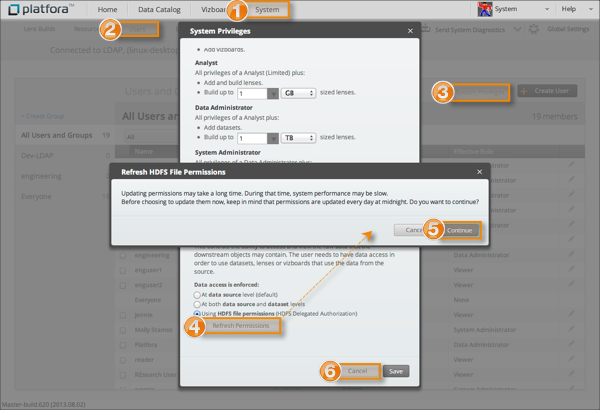

Platfora refreshes the data access permissions based on the current HDFS file permissions
at midnight every day and when Platfora restarts. Midnight is determined by the
configured time zone for the Platfora master node. System administrators can choose to
refresh the data access permissions manually at other times.
Note: Refreshing data access permissions may take a long time, during which system performance may
be slow. The time required to refresh the data access permissions depends on the
number of datasets and the number of files in each dataset.

-
Go to the System page.
-
Go to the Users tab.
-
Click the System Privileges link.
-
In the Data Access section, click Refresh
Permissions.
-
Click Continue in the dialog that appears.
-
After the permissions are updated, click Cancel.